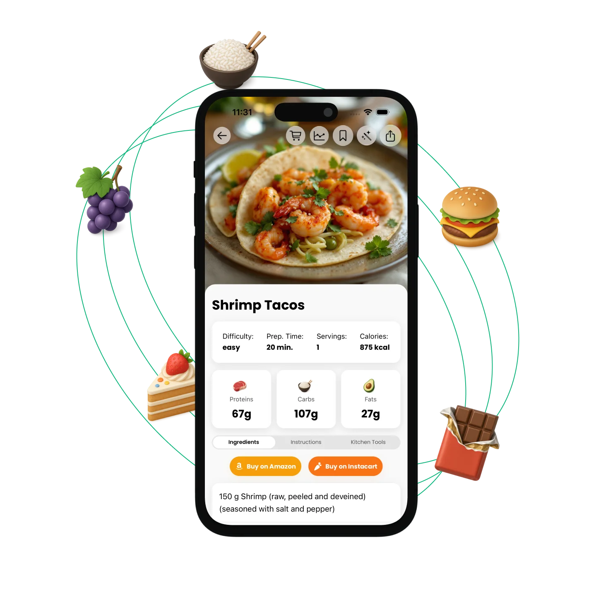

Turn ingredients in your fridge
Type your ingredients or snap a photo — PantryChef instantly creates meals from what you have.
Ingredients
- Chicken
- Rice
- Tomato
- Garlic

Instructions
- Cuisine selection: Italian, Asian, Mexican, Mediterranean, and more
- Dietary filters: vegan, keto, gluten-free, dairy-free, and others
- Scales automatically for 1 to 12+ servings
- Step-by-step instructions optimized for your cooking method